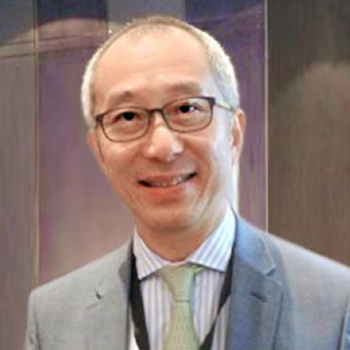

<div class="container">
    <div class="row">
        <div id="speaker-detail" class="col-lg-6 col-lg-offset-3">
            <div class="row">
                <button title="Close (Esc)" type="button" class="mfp-close">×</button>
                <div class="col-md-4 col-lg-4">
                    
                    <br />
                </div>
                <div class="col-md-8 col-lg-8">
                    <h2>Winston Town, Ph.D</h2>
                    <h3>Vice President, Diamond BioFund Inc., Chairman and President, Fountain Biopharma Inc.</h3>
                    <p>Winston joined Microbio Group in March 2013 and currently serves as Vice President at Diamond BioFund Inc., a specialized health care venture capital firm with US$300 million under management and Chairman and President of Fountain Biopharma Inc. Winston was formerly Chief Executive Officer of Panacor Bioscience and spearheaded a successful new drug development in the nephrology field in collaboration with pharmaceutical companies in the United States and Japan. Prior to that, Winston served as Senior Vice President with GloboAsia, a drug development consultation company. He has consulted and worked on numerous drug development projects involving multiple collaborative parties worldwide covering Africa, Asia as well as N. America. Winston has in-depth work experience with pharmaceutical companies in Asia and the United States in designing and implementing development and commercialization strategies. He is also well connected in the financial communities around the world.
                    </p>
                    <p><a href="http://www.diamondcapital.com.tw/en/" target="new">Diamond BioFund Inc.</a></p>
                    <p>Diamond was established in 2013 with USD 300 million under management & the largest evergreen health care fund based in Taiwan. Management team has extensive life science management experiences and product development expertise in the biotech sector.</p>
                    <p><a href="http://en.fountainmab.com" target="new">Fountain Biopharma Inc.</a></p>
                    <p>Fountain was founded in December 2010 and headquartered in the Nankang Software Park, Taipei, Taiwan. Fountain Biopharma focused on innovative development of humanized & fully human monoclonal antibodies for the treatment of allergic disorders and cancers. The company has instituted needed core technologies for antibody drug discovery and development including fully human antibody phage display, screening bioanalytics, and antibody-guided delivery through collaboration with several leading academic institutes.</p>
                </div>
            </div>
        </div>
    </div>
</div>